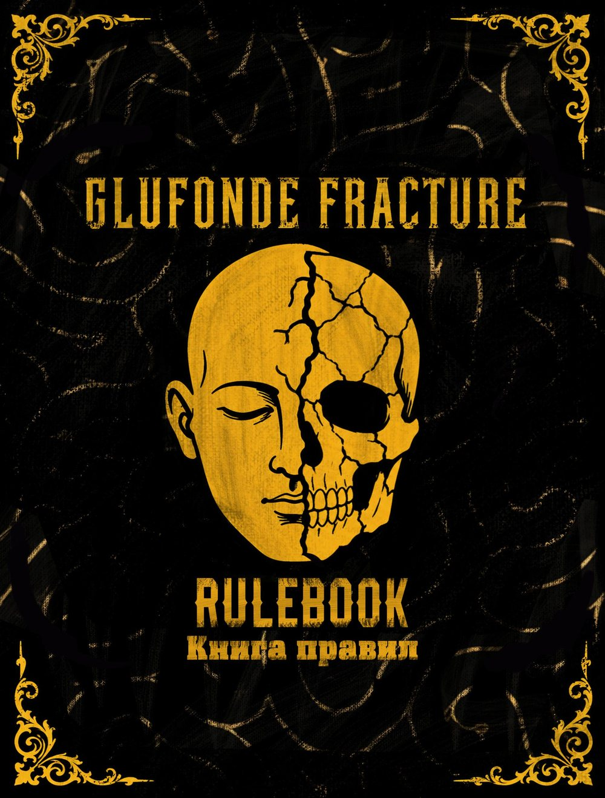

Для работы читалки нужен JavaScript. Включите его в настройках браузера.

Всё о Glufonde Fracture
Лицензия и авторские права
Музыка включится в разделе.
У RuleBook и «Истории Глюфонде» своя музыка. Если файла нет, чтение не страдает.
Внимание: включение этой функции создаёт большой риск наткнуться на спойлеры к будущим игровым сессиям.
На телефоне колонка всегда занимает всю ширину экрана.
В этом браузере нельзя сохранять данные: настройки, закладки и место чтения пропадут после закрытия страницы.